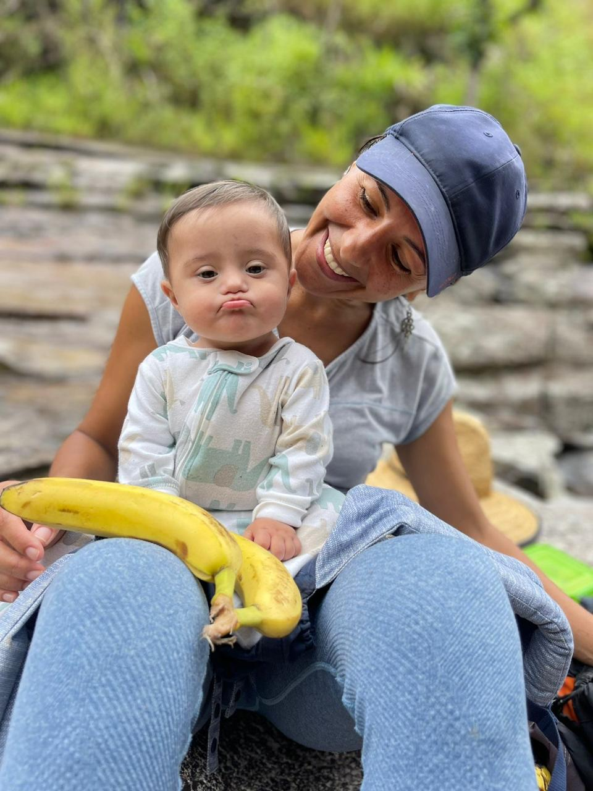
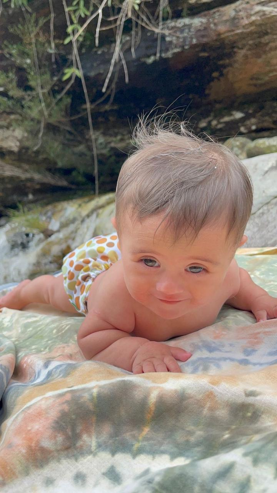
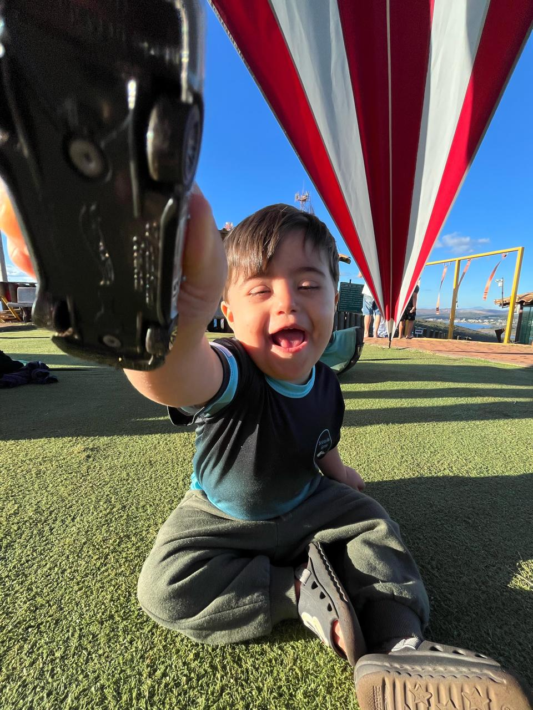
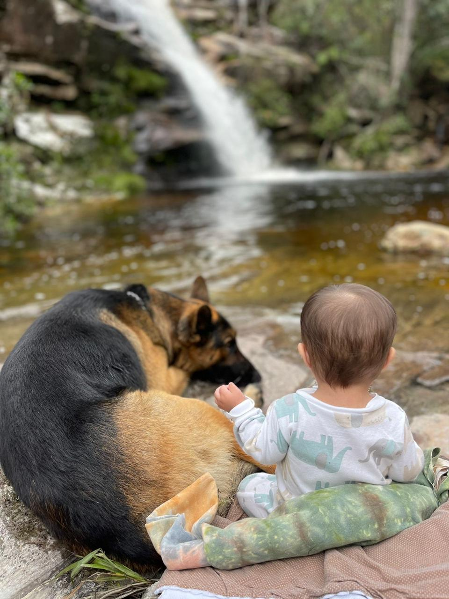
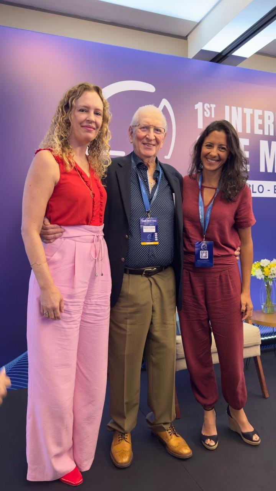

Atendimento presencial e acolhedor em BH

Descobri ainda na gravidez que o Nauê tinha T21. Veio o coração apertado e uma pergunta que não saía da minha cabeça: e agora, por onde eu começo?
Fui atrás. Errei, acertei, mas depois que nasceu era muito difícil pra mim entender se estava no caminho certo, ou se dava pra mais. Me cobrei demais. E descobrir o método CME deu um salto na evolução dele que me acalmou. Mas não te conto isso como promessa, cada criança é única.
O que aprendi na pele foi simples: ninguém deveria atravessar isso no escuro. Foi o que me faltou, e é o que eu não deixo faltar pra quem chega aqui.


É exatamente isso que eu faço aqui: te mostro o caminho, e a gente anda ele junto.

Quando você cuida de uma criança, cuida de uma família inteira.
CME é Cuevas Medek Exercises, uma das principais abordagens do mundo para atraso motor neurológico, e a que mais cresce.
A ideia é simples: em vez de sustentar a criança num aparato, a gente cria o desafio certo pra ela conquistar o próprio movimento.
É o mais perto da vida real.
O estímulo é pensado pra criança responder sozinha. Cada avanço é dela, e por isso se sustenta fora da sessão, no dia a dia.
Cada exercício mira uma função do dia a dia: rolar, sentar, engatinhar, explorar. Movimento que serve pra vida, não pra sala.
CME é acompanhamento contínuo. A gente respeita a idade, o momento e a família, sem pular etapas.

Me especializei em Cuevas Medek Exercises com o próprio Ramón Cuevas, o criador da técnica.
É o método na origem, não uma versão diluída que passou de mão em mão antes de chegar até você.